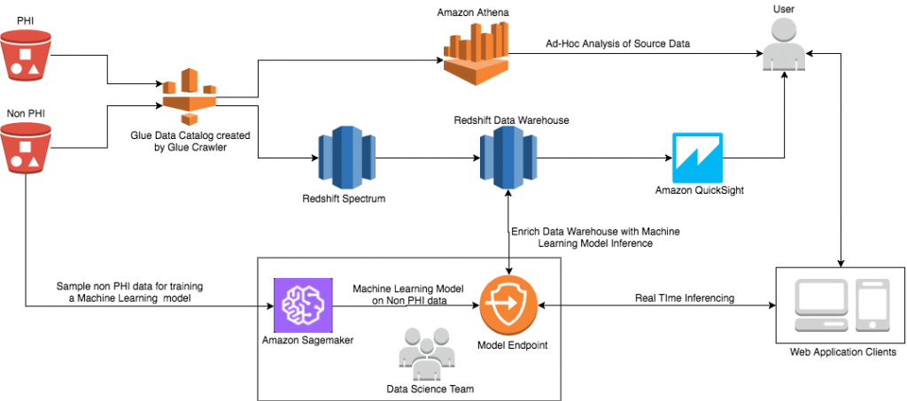
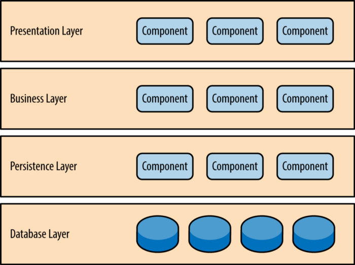
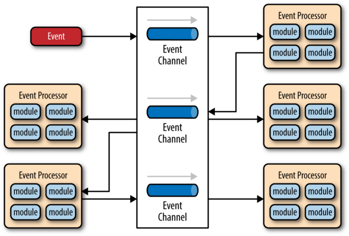
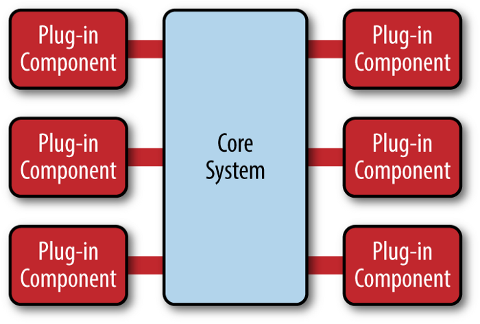
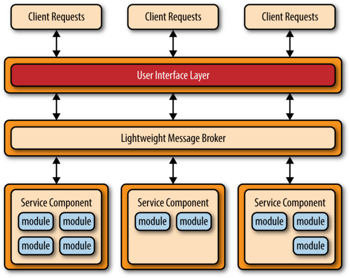
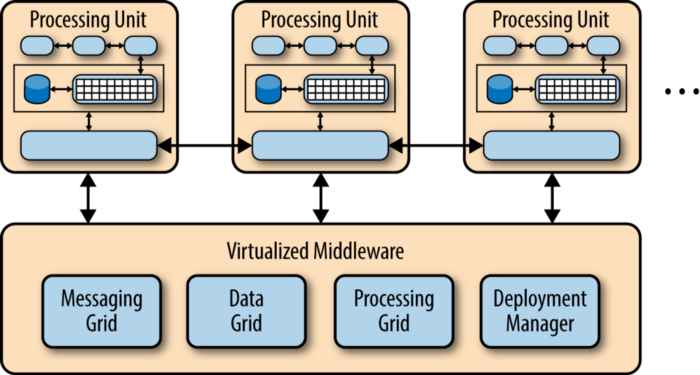

五分钟理解软件架构模式（译文）
文章目录

当一个人深入软件工程的世界时，总有一天他需要学习软件架构模式的基础知识。当我刚开始编码的时候，我不知道从哪里获得一个关于现有架构模式的简要介绍的文章。我们希望不是详细、混乱地理解软件工程，而是抽象、简单地理解软件工程。
这一直是个问题，直到我找到了 Mark Richards 写的《软件架构：架构模式、特征及实践指南》一书。在这里，我想与您分享一些关于该书以及架构模式的最重要部分。(要了解更多信息，我强烈建议你阅读这本书或他的报告)。
为什么作为软件工程师，你至少应该学习基本的架构模式?
我相信已经有很多文章回答了这个问题，但我这里将给你一些理由来说服你。
- 首先，如果您了解体系结构模式的基础，那么您就可以更容易地遵循架构师的需求。
- 其次，了解这些模式将有助于你在代码中做出决定：例如，如果你的应用设计是基于事件驱动的微服务，作为一名软件工程师，如果你注意到现有服务中逻辑的复杂性和责任的增加，你必须把你的代码解耦到一个单独的服务中。(如果你没有理解这个说法，别担心，下文会具体进行解释）。
Mark Richards 的书中描述了 5 种模式：
- 分层架构-Layered architecture
- 事件驱动架构-Event-driven architecture
- 微内核架构-Microkernel architecture (or Plugin architecture)
- 微服务架构-Microservices architecture
- 基于空间的架构-Space-based architecture (or Cloud architecture pattern)
1. 分层架构-Layered architecture
它是单体应用最常见的架构。该模式的基本思想是将应用程序的逻辑划分为若干层，每层都封装了特定的角色。例如，持久层-Persistence layer 将负责你的应用程序与数据库引擎的通信。

图1.分层架构模式（link to the original source of the picture）
补充说明：在 7 种面向对象的设计原则中，单一职责原则建议一个类只负责一个功能领域中的相应职责。或者可以定义为：就一个类而言，应该只有一个引起它变化的原因。实际上分层架构的背后，符合了单一职责原则。
2. 事件驱动架构-Event-driven architecture
这种模式背后的想法是将应用逻辑解耦为单一用途的事件处理组件，这些组件异步地接收和处理事件。这种模式是流行的分布式异步架构模式之一，以高可扩展性和适应性而闻名。

图2.事件驱动架构（link to the original source of the picture）
补充说明：一个注明的事件驱动 Java 应用网络框架为 Netty。
3. 微内核框架-Microkernel Architecture
微内核架构，也被称为插件架构，是有两个主要组成部分的设计模式：一个核心系统和插件模块（或扩展）。一个很好的例子是网络浏览器（核心系统），在那里你可以安装无尽的扩展（或插件）。

图3.微内核框架（link to the original source of the picture）
补充说明，作者在其项目中给出了简单的插件模式：Mikrokernel or Plugin pattern，使用 Go 语言编写。插件设计模式的核心是：
- Core System 面向接口编程，每一个插件都应该实现统一的接口
- Core Sysrem 负责插件的声明周期，插件的初始化、加载、销毁，这些声明周期方法统一定义在接口中
在原作者的项目中，所有插件被 Core System 统一对待，因此，插件之间的通信 Core System 并不负责，插件通信由插件内部的业务逻辑实现。例如你可以将一个插件 DB 作为插件 Service 构造器参数，通过组合的方式，插件 Service 与插件 DB 进行通信（业务逻辑依赖于 service）。但是，更好的做法是 Core System 提供一套插件通信机制，插件与插件之间不直接通信，插件间通信通过 Core System 来完成，Core System 实现了面向接口的插件间通信。例如，第一步，实现不同类型的插件接口，插件接口符合职责单一原则，例如 ServicePlugin 接口、DbPlugin 接口。插件之间的通信交给 Core System 来完成，我们在接口层面实现 ServicePlugin 接口依赖 DbPlugin 接口的关系，而不是交给具体的插件实现来通信。
4. 微服务架构-Microservices Architecture
微服务架构由单独部署的服务组成，每个服务都有理想的单一责任。这些服务是相互独立的，如果一个服务出现故障，其他服务不会停止运行。

图4.微服务架构（link to the original source of the picture）
5. 基于空间的架构-Space-Based Architecture
基于空间的模式背后的主要想法是分布式共享内存，以缓解经常发生在数据库层面的问题。其假设是，通过使用内存数据处理大部分操作，我们可以避免在数据库中进行额外的操作，从而避免可能在将来出现的一些问题（例如，如果你的用户活动数据实体发生了变化，你不需要改变一堆代码来持久化和从数据库中检索该数据）。
基本的方法是将应用程序分离成处理单元（可以根据需求自动扩大和缩小），数据将在这些单元之间复制和处理，而不需要持久化到中央数据库（尽管在系统故障的情况下会有本地存储）。

图5.基于空间的架构（link to the original source of the picture）
你可以在我的 GitHub 账户中找到其中一些架构模式的最简单例子。
- Layered pattern (in Java)
- Mikrokernel or Plugin pattern (in Go or Golang)
- Microservices pattern (in Go)
如果你想快速了解应用程序如何扩展的基础知识，那么请阅读我的下一篇文章《How to Scale Your Applications: 5 min read》。接着是文章Caching as a part Software Architecture: 5 min read。这是对通过缓存进行性能调整的更细致的研究。
另外，如果你寻找更进阶的主题，可以阅读RPC chains: 5 min read。